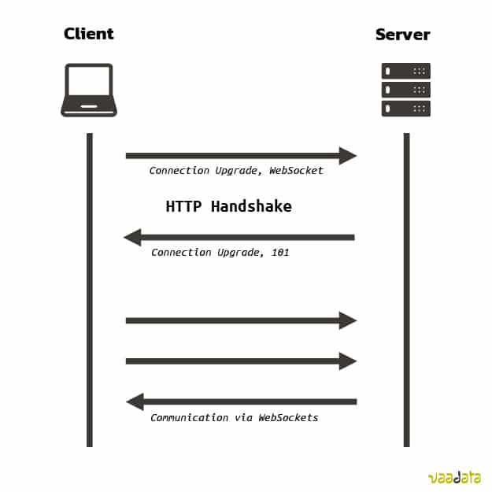

So, what if you want to have bidirectional connection since you need lower latency ? Well, then you need web sockets Within this approach TCP is used and connection is up until client or server shuts it down.
Step 1. The client initiates an HTTP connection.
Step 2. WebSocket establishes a handshake between the client and server that makes WebSocket compatible with HTTP ports (80 and 443) and proxies.
Step 3. Both the client and server exchange messages freely via an open, persistent connection that doesn’t require continuous polling or new HTTP requests.
Step 4. The connection remains open until one side closes the channel, at which point the connection closes and the client-server engagement ends.
It is easy to understand pros but what are cons?
- Increased Complexity
- Resource Consumption
- Firewall and Proxy Issues
- Security Concerns
- Lack of Built-in Retry Mechanism
- Incompatible with REST APIs
- Monitoring and Debugging complexity
- No Native Support for Caching
